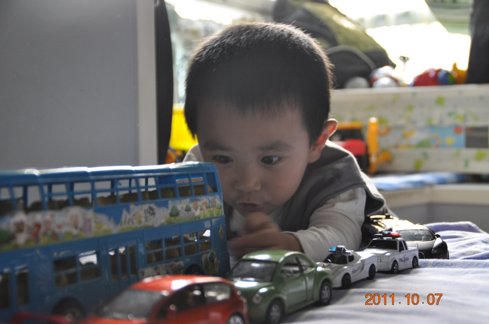
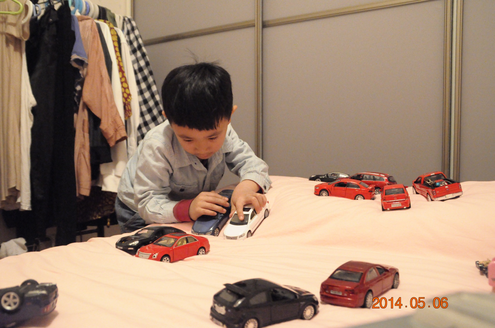

CURIOSITY / ENGINEERING / REAL-WORLD LEARNING
Mingtao
Yuan.
I am a high school student at Fryeburg Academy. My interest in cars leads me to explore driving data and learn how vehicles work.
Start with one corner ↓START HERE · ABOUT 3 MIN
One corner. Two lines.
Can a different line help a car carry more speed through an uphill turn? Start with the animation, then see what two laps suggest—and what I still need to test.
Read the corner case study ↗THE FULL DATA STUDY · APRIL 2026
Finding 7.401 seconds.
What three selected laps taught me about corner speed, driving decisions, and learning from telemetry at Buttonwillow.
Explore the full study ↗ MOTORSPORT View the story ↗
MOTORSPORT View the story ↗Learning on track.
My first track days, learning with an instructor, and the driving experiences behind the questions in the study.
Read the driving story ↗RWTH Aachen
Three weeks exploring how classroom principles connect to real vehicles.
Explore the course ↗TECHNOLOGY EXPERIMENTAI Lab
Ask an engineering question and check its sources, or compare your own driving data. Start with Knowledge Explorer—no telemetry files needed.
Choose an exploration path ↗Photography
A collection of race-day images, garage visits and moments from my motorsport learning.
View photographs ↗STUDENT INITIATIVE · IN DEVELOPMENTCampus Market Hub
Working with fellow students to prepare a dorm-community exchange platform: the proposal, school feedback and plans for a limited pilot.
Read the project story ↗ABOUT


It started with toy cars.
My interest in cars began with the models I played with as a child. Years later, learning to drive on track gave me new questions about how cars behave. I began examining telemetry and went on to study automotive engineering at RWTH Aachen Summer School.
I also enjoy building small technology projects, photography, and working with other students on practical ideas for our school community. I use this site to document what I try, what I learn, and what I still want to understand.
Contact: sunnymt0508@gmail.com